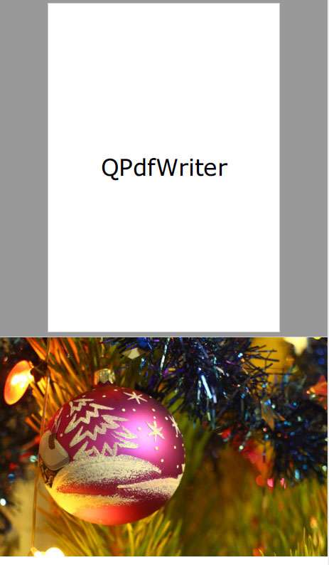

На этом шаге мы рассмотрим назначение, форматы конструктора, основные методы этого класса и пример использования.
На 299 шаге уже говорилось о возможности сохранения печатаемого документа в файл формата PDF - для этого достаточно вызвать метод setOutputFileName(), передав ему в качестве параметра путь к файлу и указав у этого файла расширение pdf. Однако при этом задействуется подсистема печати Windows, что приводит к напрасному расходу системных ресурсов.
Библиотека PyQt5 предоставляет возможность экспорта документов в формат PDF напрямую, без использования подсистемы печати. Для этого используется класс QPdfWriter, объявленный в модуле QtGui. Его иерархия наследования:
QPaintDevice - (QObject, QPagedPaintDevice) - QPdfWriter
Формат конструктор этого класса:
<Объект> = QPdfWriter(<Путь к файлу>)
В качестве параметра указывается путь к файлу, в который будет экспортирован документ.
Вывод документа в формат PDF выполняется так же, как и его печать (смотри 300 шаг). Как и QPrinter, класс QPdfWriter поддерживает метод newPage(), подготавливающий следующую страницу документа для вывода.
Класс QPdfWriter поддерживает также и следующие методы, которые будут нам полезны (полный их список можно найти на странице https://doc.qt.io/qt-5/qpdfwriter.html):
- setPageSize (<QPageSize>) - задает размер страницы в виде экземпляра класса QPageSize. Возвращает True, если операция увенчалась успехом, и False - в противном случае;
- setPageOrientation (<Ориентация>) - задает ориентацию страницы в виде значения атрибута Portrait (0, портретная) или Landscape (1, ландшафтная) класса QPageLayout.
Возвращает True, если операция увенчалась успехом, и False - в противном случае;
- setPageMargins (<QMarginsF>[,<Единица измерения>]) - задает отступы от краев страницы в заданной единице измерения. Сами отступы указываются в виде экземпляра
класса QMarginsF. Единица измерения указывается в виде значения одного из следующих атрибутов класса QPageLayout:
- Millimeter (или 0) - миллиметры;
- Point (или 1) - пункты;
- Inch (или 2) - дюймы;
- Pica (или 3) - пики;
- Didot (или 4) - дидо (0,375 мм);
- Cicero (или 5) - цицеро (4,5 мм).
- setPageLayout (<QPageLayout>) - задает сразу все параметры страницы (размеры, ориентацию, отступы от краев страницы и т. п.) в виде экземпляра класса QPageLayout.
Возвращает True, если операция увенчалась успехом, и False - в противном случае;
- setResolution (<Разрешение>) - задает разрешение в виде целого числа в точках на дюйм;
- setCreator (<Имя создателя>) - задает имя создателя документа, которое будет записано в файл PDF;
- setTitle (<Заголовок>) - задает заголовок документа, который будет записан в файл PDF.
В качестве практического занятия возьмем код, приведенный на 300 шаге, и немного переделаем его: пусть на первой странице он выводит вместо надписи "QPrinter" строку "QPdfWriter", а в качестве формата бумаги устанавливает А5.
from PyQt5 import QtCore, QtWidgets, QtGui, QtPrintSupport import sys app = QtWidgets.QApplication(sys.argv) writer = QtGui.QPdfWriter("output.pdf") writer.setCreator("ФИО") writer.setTitle("Тест") # Заодно поэкспериментируем с указанием параметров бумаги с помощью # класса QPageLayout layout = QtGui.QPageLayout() layout.setPageSize(QtGui.QPageSize(QtGui.QPageSize.A5)) layout.setOrientation(QtGui.QPageLayout.Portrait) writer.setPageLayout(layout) painter = QtGui.QPainter() painter.begin(writer) color = QtGui.QColor(QtCore.Qt.black) painter.setPen(QtGui.QPen(color)) painter.setBrush(QtGui.QBrush(color)) font = QtGui.QFont("Verdana", pointSize=42) painter.setFont(font) painter.drawText(10, writer.height() // 2 - 50, writer.width() - 20, 50, QtCore.Qt.AlignCenter | QtCore.Qt.TextDontClip, "QPdfWriter") layout.setOrientation(QtGui.QPageLayout.Landscape) writer.setPageLayout(layout) writer.newPage() pixmap = QtGui.QPixmap("img.jpg") pixmap = pixmap.scaled(writer.width(), writer.height(), aspectRatioMode=QtCore.Qt.KeepAspectRatio) painter.drawPixmap(0, 0, pixmap) painter.end()
Содержимое pdf-файла приведено на рисунке 1.

Рис.1. Результат работы приложения
У класса QPdfWriter есть недостаток - создаваемые с его помощью PDF-документы имеют очень большой размер. Вероятно, PyQt5 создает документы максимально доступного в формате PDF качества, и понизить его, тем самым уменьшив размер результирующих файлов, мы не можем.
На следующем шаге мы подведем итог изученному материалу.